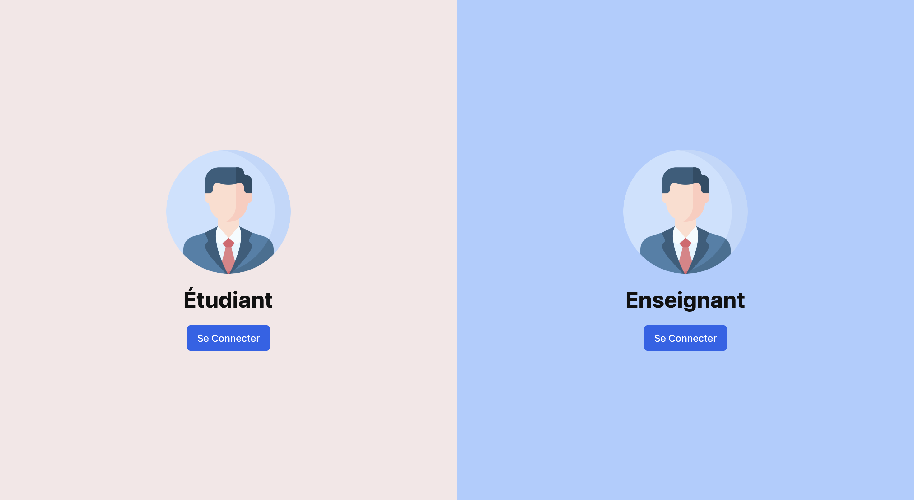
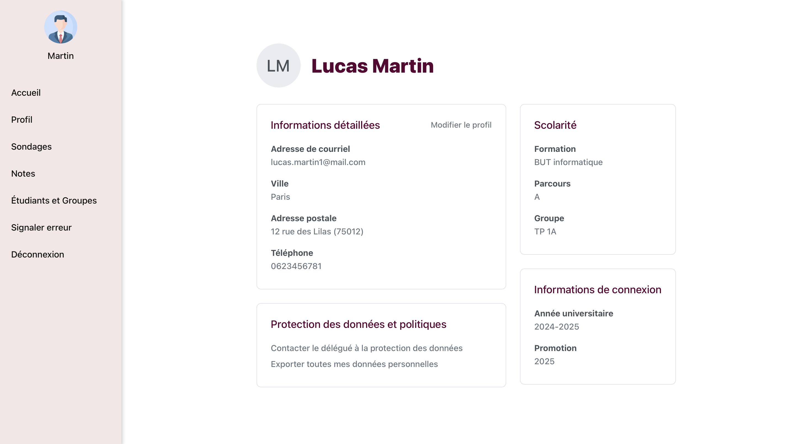
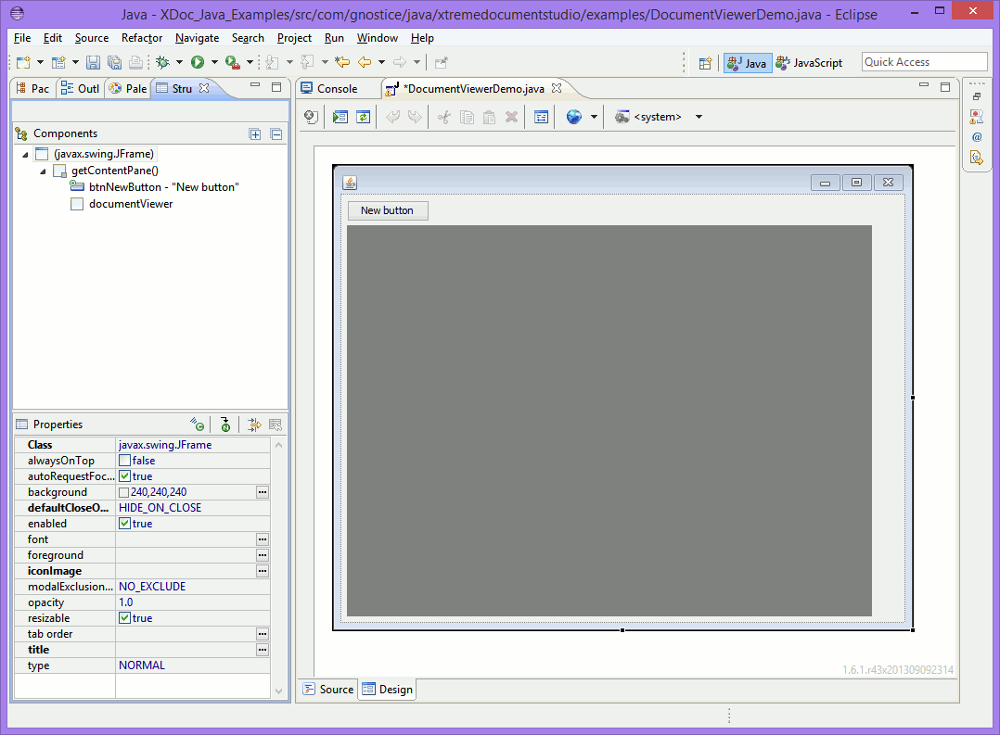
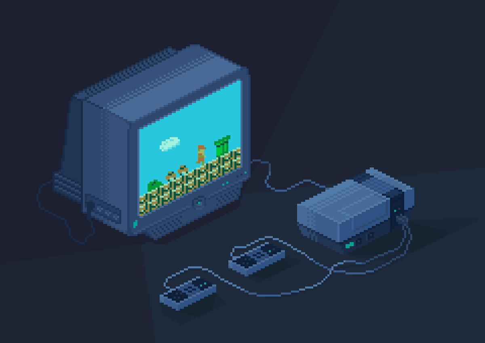
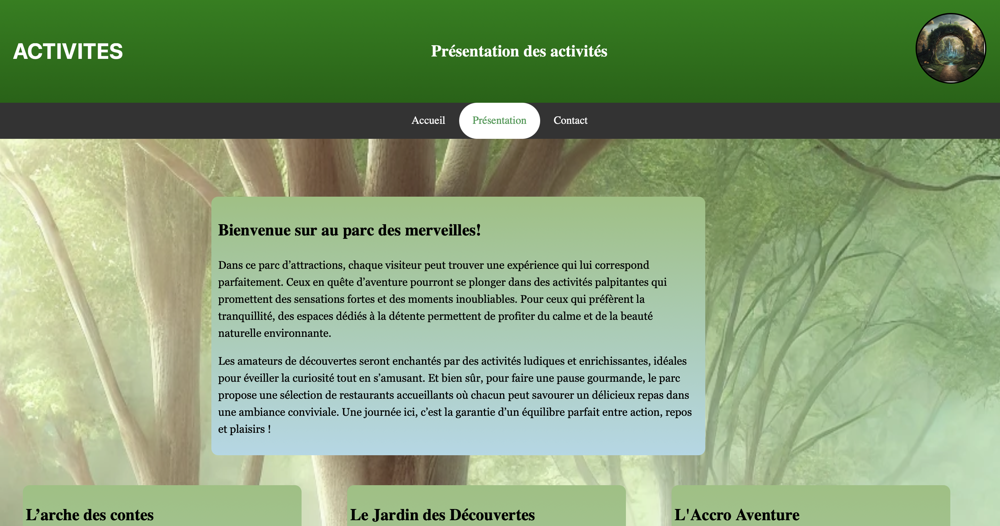
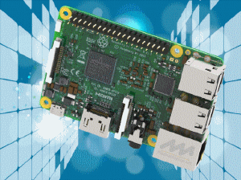
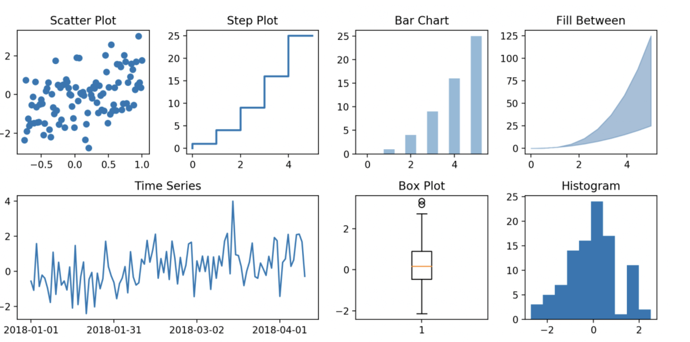
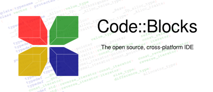
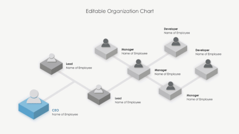

Projets Informatiques
Création d'une plateforme de gestion d'étudiants 👩🎓
Réalisé en langage Java, Java Swing, PHP, le but de ce projet est de réaliser une application et un site web relié a une API REST avec la base de données permettant la gestion des étudiants et des enseignants.
Objectif : Utiliser des algorithmes gloutons et force brute afin de pouvoir optimiser au maximum l'équilibre entre les groupes créer.


Projet Transverse 🧑💻
Utilisation de plusieurs outils et langages informatiques tels que Figma pour la maquette du projet et l'interface visuel et Java et JavaSwing comme langage de programmation du projet et GitLab pour les projets en groupes.
Objectif : Gestion du site web de la cité internationale Universitaire de Paris, ajout des fonctionnalités et amélioration de quelques aspects.

Création d'un jeu vidéo 👾
Réalisé en utilisant des techniques avancées en C++.
Objectif : Implémenter et ajouter des fonctionnalités au jeu vidéo en partant d'une base vide.

Création d'un site web 🌳
Création d'un espace de divertissement fictif avec HTML et CSS.
Objectif : Renforcer mes compétences en création de sites Web, en travail d'équipe, et en présentation d'idées de manière claire et engageante.

Installation d’un poste de développement 🖥️
Installation et configuration d'un système de gestion de bases de données sur un Raspberry Pi 400 sur Linux, à partir d'une carte SD vide.
Objectif : Création de tables avec des données fictives et documentées, avec un processus reproductible dans une machine virtuelle. Maîtriser l’installation et la configuration d’un poste de travail numérique sous Linux.

Implémentation d'un besoin client 🎮
Réalisé en langage C++. Projet sous forme d’un jeu vidéo qui manque de fonctionnalité.
Objectif : Implémenter le code avec de nouvelles fonctionnalités selon le besoin du client.

Analyse d'une base de données 📊
Analyser une base de données en utilisant le language de programmation Python en réalisant des programme capable de modèliser les résultats des statistiques mené sur une base de données massivement implémenté.
Objectif : Afficher des résultats simplifiés en courbes, et diagrammes.

Création d'une base de données 📝
Création d'une base de données avec SQLite en partant d'un besoin exprimé par un client après avoir réalisé un Modèle Conceptuel de Données MCD et un Schéma Relationnel SR.
Objectif : Recueil des informations chez une entreprise puis conception et réalisation de la base de données. Première expérience dans la formalisation et l'implémentation de bases de données à partir des données d'un client.
Gestion d'une bibliothèque📚
Réalisé en langage C, ce projet consistait à gérer une bibliothèque selon le client.
Objectif : Utiliser de nouveaux outils et bibliothèques du langage C tout en apprenant à coder un langage plus complexe.

Recueil de besoins 🗃️
Analyse et recueil des besoins de la maison d'édition CARIBOU.
Objectif : Réalisation d'un cahier des charges, conception d'un organigramme des tâches, d'un diagramme des interactions et un diagramme de pieuvre.
